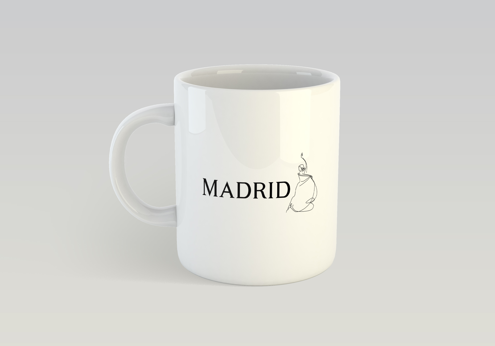
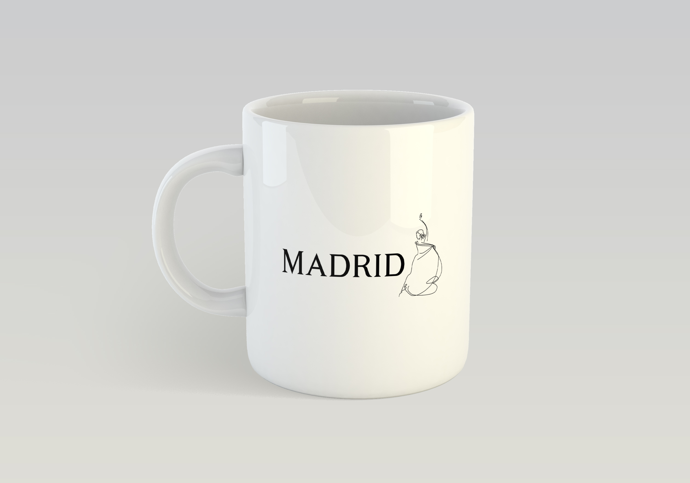

Tourism Logo
Description of Project:
The city that I chose to do my logo design on was Madrid. I chose Madrid because I was already very familar with the city and had great grandparents that used to live there but, I wanted to go further in my research and learn more about the culture.
Client: Emily Moody
Service: Visual Identity Design, Graphic Design
Skills: Adobe Photoshop, Adobe Illustrator
 
